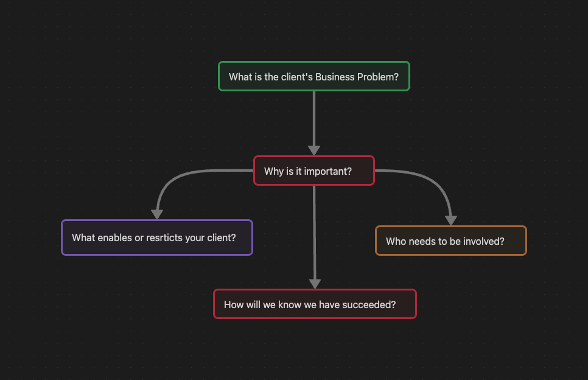
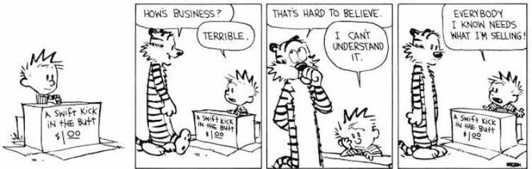
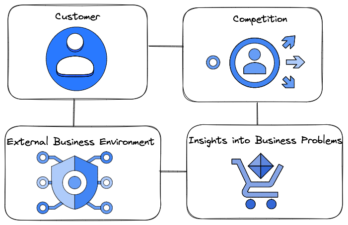
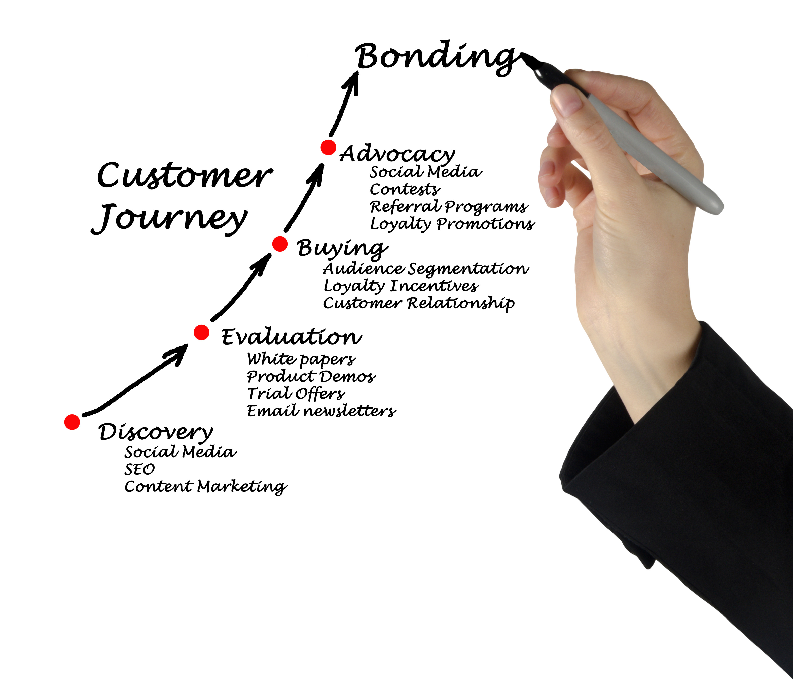
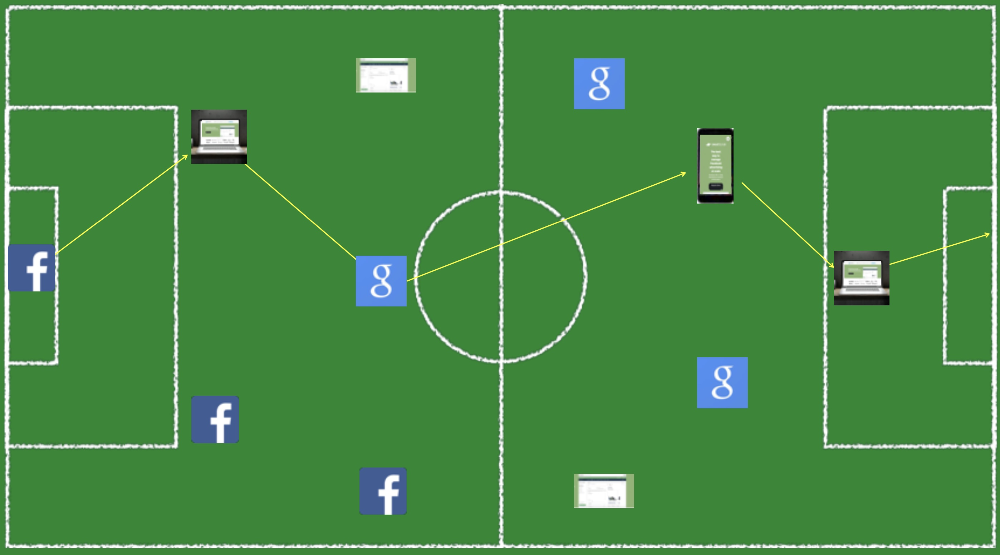
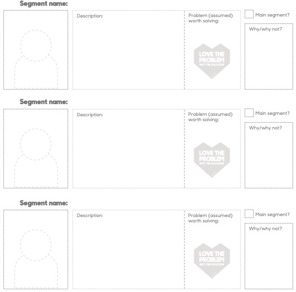
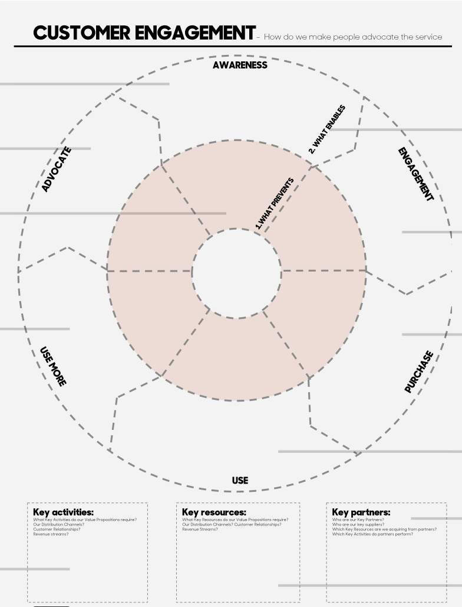
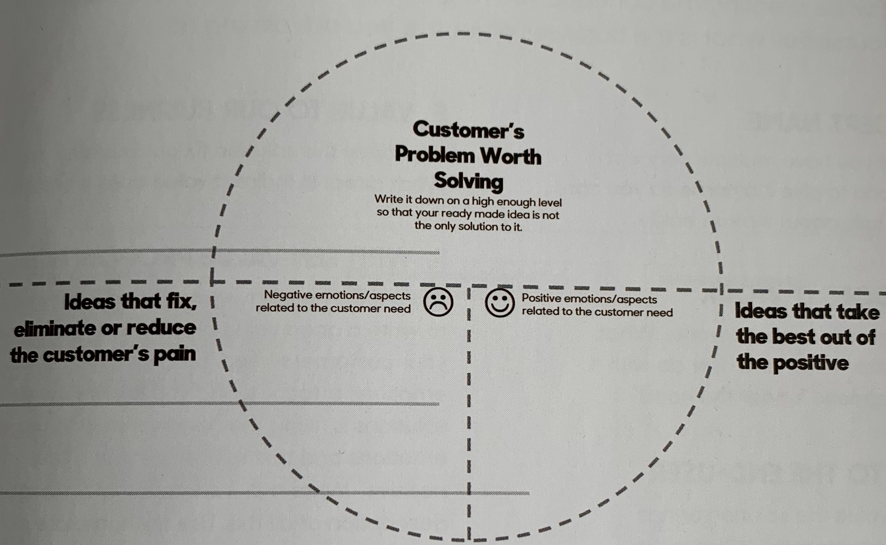
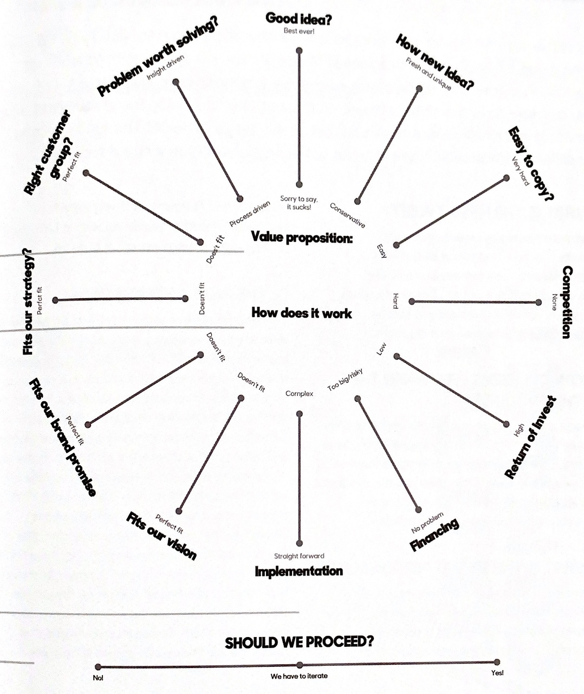

6 Report
The project report is a written document that you submit as one of the key deliverables of an industry project. This chapter illustrates a systematic approach to working on a project report. It gives you what contents form part of your report and how you should structure it based on those parts.
The outline here is a recommendation. Project groups should adapt them according to the description of the business problems and the scope of the business solutions.
6.1 Parts of Report
Working on an industry project can be daunting. Not only do groups have to come up with creative and feasible solutions to given business problems by the client, but they also have to submit a written report. Such a report is a professional business document that systematically presents the group’s business solutions by including background research and future directions.
Each one of us has different ways to manage the complexities of a project. However, when working in a group, we must be in sync with the other members of the project. Therefore, a formal way of managing a project that focuses on the whole group rather than a single individual is essential. We outline some of the steps that students can follow in a group that will form part of the report.
6.1.1 Business objective
Get answers to the following questions.

What is your client’s business problem?
Which business problem of the client are you solving? Analyze it critically.

There could be multiple solutions to your client’s business problem, and you are exploring the feasibility of one or some.
Why is it important?
What is the goal of your client (e.g., market expansion, customer experience management, new product development, advertising, market growth, sales)?
Who needs to be involved?
Which entities of the organization will be involved in solving the problem (e.g., operation, marketing, accounting, human resources)?
What enables and restricts your client?
What are the strenghts and weaknesses of the client (e.g.,
SWOTanalysis)?

How will the client measure success?
What metrics or key performance indicators (KPIs) will be used to measure the success of the business solutions?
6.1.2 Business environment
Get answers to the following questions focusing on customers, competition, the external business environment, and deeper insights into the business problems.

What are the customers’ problems?
What kinds of customers’ needs and wants are satisfied by the client’s offerings? What are the pain points of consumption?
What alternative solutions customers have access to?
What alternatives are there for the client’s customers? How is the client competing for customers’ time, attention, engagement, and involvement? How does the client’s offering beat the alternatives?
Who are the competitors in your business?
Which other companies or organizations are providing similar solutions in the market to target the same set of customers?
What are the disruptive factors for the business?
How do external factors (such as competitive, regulatory, economic, social, and technological) impact the client’s business?
Gather news, events, start-ups, experts, and public debate relating to the business problem.
Go beyond your comfort zone to understand the client’s business problems. Explore additional resources such as data, technical reports, financial statements, public debate, news articles, and expert opinions.
6.1.3 Data requirement

Your proposed business solutions should be data-driven. While intuition or simply knowing what is right or wrong will get you so far, it through data that you will be able to verify, understand, and quantify. Thus, data-driven decision-making will help you back your new ideas or business solutions with evidence. It will thereby make you more confident in your proposed business solutions and help reduce cost and risk.
Get answers to the following questions that will help you in data-driven decision-making.
What data do we need?
Data help you in uncovering hidden patterns that intuition alone can not fathom. However, you need to have clarity on what sorts of patterns you are after (e.g., consumer behavior, competition, product features) that will help you identify right kind of data.
What are the data sources?
Where do you get access to these data? You can utilize secondary data for some business problems (e.g., market share). In contrast, for others, you may need primary data (e.g., consumers’ intention for a new product purchase that can be collected using a survey).
Operationalize key metrics from the data to define business success.
You should use data to define metrics or key performance indicators that help clients quantify your business solutions’ success (or failure).
What are the competitive advantage provided by the data?
Use data to tell a compelling business story. In many business contexts, especially in service sector, data can be a valuable asset to firms that they can monetize.
You may uncover patterns in data. Beware not to interpret correlation or association among variables as causal relationships unless you have modeled data using appropriate research design.

6.1.4 Customer experience

Today’s business philosophy has shifted from a product-centric to a customer-centric business model. In marketing, customer centricity refers to focusing on the right customers for strategic advantage. Such a marketing strategy generates more profits by aligning a firm’s offerings (products or services) with the wants and needs of its most valuable customers. The challenge is often in identifying the right customers or most valuable customers.
To address that challenge you will need to get answers to the following questions that pertain to understanding customers’ purchase journey.
Define customer purchase journey starting from awareness all the way to the purchase.
How do customers interact with the client? Explore these questions by looking at customers’ pre-purchase, purchase, and post-purchase behaviors.

What are the different ways to segment customers?
Not all customers are created equal. Customers’ needs, wants, behavior, sensitivities, and responses vary among them (which is also called customer
heterogeneity). Find ways to segment the client’s customers (e.g., define characteristics of each customer segment) and identify which ones are the right customers (e.g., get insights into their likes/dislikes/size/preference/choice) to align their strategy.

Once you have identified different stages of the customer purchase journey (CPJ) for different segments of customers, you will use distinct marketing strategies (e.g., social media marketing, email marketing, search marketing, channel strategy) to provide a superior customer experience at every stage of CPJ to facilitate customer engagement.

6.1.5 Idea generation
You now understand the client’s business problem, business environment, data requirements, and customers. It is time now to generate new ideas to solve the assigned business problem. This part will be the critical part of the report showing your contribution, creativity, critical thinking, and strategies.
- Trial and error
- Learn from others
- Make mistakes
Based on your prior research, you may ask the following questions to generate ideas or solutions
What ideas help in reducing or eliminating customers’ pain?
What strategies or solutions will help in eliminating customers’ pain points? For example, doe the client need to offer multiple touchpoints to engage with customers, is there a need to provide multiple channels to ease the pain of purchasing? You will use elements of marketing mix (product, price, place, and promotion) to address customers’ pain points.

What ideas help in enhancing or generating customer value?
How your solutions are helping client to generate customer value by eliminating those customer pain points? How will you capture the customer value?
How your ideas help in increasing the overall company value?
Also, you should link the role of customer value in creating business value. These are some of the metrics to capture business value.
- Sales
- Profits
- Customer engagement
- Brand value
- Potential investor
- Competitive advantage
- Employee satisfaction
How the feasibility of your ideas are linked to the company’s budget constraints?
Your client will face certain business constraints under the given business environment. You should critically evaluate the feasibility of your ideas under such conditions. It would be best if you discussed with the client whether those constraints are short or long-term before finalizing your solutions.
If you have multiple ideas, then you should profile your ideas to get an assessment of the best feasible idea.
The assessment can be based on the following:
- Novelty.
- Impact of idea on customer experience.
- Impact of idea on business value.
- How easily the idea can be copied.
- What is the return on investing (ROI) of the idea.
- How easy it is to implement.
- Is idea in line with the business’s vision.
- Risk involved in implementing the idea.
- Cost-benefit analysis.
Before you finalize an idea, you should profile each concept (or idea). Group should perform this collectively.

6.1.6 Experimenting
The best idea needs to be tested before its implementation at wider scale. Hence, there is need for experimenting. Following are some of the ways marketing concepts are experimented.
- Fake advertising
- Survey
- Market research
- Validation using survey or market research
- Focus group
- Prototype
- A/B Testing
If your client is a startup, you can experiment with minimum viable product (MVP). An MVP is a free-standing product with minimal features that solves the most important problem for the customers it is supposed to serve. An MVP shows validation of learning customers’ needs, wants, pain points, and preferences with the least efforts.
6.1.7 Impact evaluation
Success of any strategy is judged by its impact. Such an impact can be measured on two level.
- Impact on
Customer Value
- How the strategy impacts customer purchase journey?
- How the strategy impacts customer engagement?
- How the strategy impacts customer awareness?
- How the strategy impacts customer purchase?
- How the strategy impacts customer loyalty?
- How the strategy impacts customer advocacy and bonding?
- How the strategy impacts customer repurchase?
- How the strategy impacts customer touchpoints?
- Impact on
Business Value
- How the strategy impacts business value?
- How the strategy impacts market share?
- How the strategy impacts market size?
- How the strategy impacts business growth?
- How the strategy impacts revenue and profitability?
- How the strategy impacts brand value or branding?
- How the strategy impacts image of the company?
6.1.8 Quantifying ROI
The success of any business strategy is sustainable if it has a long-term impact, which is measured by its effect on the firm’s bottom line.
The firm’s bottom line constitutes:
- Sales or Revenue
- Profits
Therefore, if you can show that your strategy has a significant impact on the firm’s bottom line, then the firm will be more willing to implement it as a long-term solution. You can show this my quantifying return on investment (ROI).
ROI, put simply, is the sum of what you get back, divided by what you put in. Thus,
\[ \text{Return on Investment (ROI)} = \frac{\text{Revenue}-\text{Cost}}{\text{Cost}} = \frac{\text{Net Profit}}{\text{Cost}} \]
However, isolating the impact of your strategy on the firm’s bottom line is often challenging. Such challenges occur as there are other changes, internal and external, taking place in the firm. Therefore, to tease out the main effect of your proposed strategy on the firm’s ROI is very important to convince the top management of the company. In this regard, you could offer metrics that will help the managers to see the impact of your strategy on the firm’s bottom line.
A good marketing ROI is a ratio of 5:1 — you’re making $5 for every $1 you spend.
An ROI of 2:1 is barely profitable because other business expenses reduce that ratio closer to 1:1.
A digital marketing ROI of 10:1 is considered exceptional. You’re definitely turning a profit, even when you account for external variables.
Even though 5:1 serves as a solid benchmark, a “good” ROI is somewhat subjective. It depends heavily on your industry and use case. Some industries are more saturated and take larger marketing budgets to cut through the noise. So don’t make ROI your end-all be-all metric. Instead, stick to your preset goals and key performance indicators (KPIs) — one of which might be ROI.
ROI indicates the performance of marketing strategy against high-intent “in-market audiences” with a level of affinity towards a brand or product. In other words, those likely to buy, whether marketing strategies are implemented or not.
Growth from marketing strategies comes from stimulating not just sales from people in-market, but also future prospects who will make up most of the sales over time.
ROI will be difficult to capture for startups. Then, what should you do? Many advancements have been made in recent years to establish fair, transparent metrics to capture the full extent of marketing’s contribution – from “mental market share” and “effective reach” to the concept of “attention.”
6.2 Writing Report
You can organize your according to the following guideline. However, you should follow a structure that fits the description and scope of the business problem.
├── Title Page
├ (Note: Add an interesting title. Mention team members' names.)
├ (Caution: Do not include student ids.)
├
├── Executive Summary
├ (Note: Describe your contribution in one paragraph.)
├ (Caution: Don't be verbose here. Make it succinct.)
├
├── Table of Content (TOC)
├ (Note: TOC has two levels with page numbers.)
├ (Tip: You can add figures and tables in TOC.)
├ (Caution: Before final submission, update TOC.)
├
├── Company Description
├ (Note: Describe your client.)
├
├── Business Environment
├ (Note: Describe your client's business environment.)
├
├── Business Problem
├ (Note: Describe your client's business problem.)
├
├── Business Strategies
├ (Note: Describe your solutions.)
├ (Tip: Spend more time here.)
├ (Tip: Organize this section across multiple subsections.)
├
├── Impact of Business Strategies
├ (Note: Describe the impact of your solutions on business.)
├
├── Implementation Timeline
├ (Note: Describe implementation plan and budget allocation.)
├
├── Limitations (Caveats or Constraints)
├ (Note: Describe limitations of your solutions.)
├
├── Conclusion
├ (Note: Conclude the report highlighting your contribution.)
├
├── References
├ (Note: Provide references. Follow APA format for citation.)
├
├── Appendix
├ (Note: Provide additional information without breaking the flow.)
└── (Tip: Organize this section properly across multiple appendices.)Generously use visual elements (e.g., figures, tables, infographics) in the report.
Don’t forget to label your figures and tables.
Spend some time in organizing tables that capture readers’ attention.
Don’t forget to include page numbers in your document.
Proof-read your document multiple times.
Ensure your document is aesthetically pleasing and visually appealing.
For example, spend some time thinking about
page layout,alignment,white space,fonts,headers,separation,regularity(evenly distribution of contents on a page),text density(how much of the page is covered in text),hanging header,floating tables/figures.